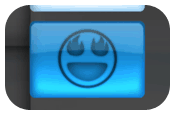
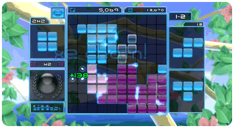

5 |
¡Bienvenido a bittos+! |
 |
|
¡Jugador Suave Lea Aquí! Bienvenido a una nueva, inovante, casual, estratégica experiencia de juego de rompecabezas hecha especialmente para el jugador casual y suave dentro de todos nosotros.
¡Jugador Acelerado y Agresivo Lea Aquí! Bienvenido a una nueva, inovante, dura, estratégica experiencia de juego de rompecabezas hecha especialmente para el jugador competitivo y agresivo dentro de todos nosotros.
¡Todos Lean Aquí! La siguiente gran cosa en juegos esta aquí. bittos+ se trata de mover tus Bloques arriba, abajo, izquierda y derecha, rotándolos y posicionándolos en el tablero de juego, justo en el lugar correcto para formar cuadros. ¡Si, cuadros! ¡De hecho, haciendo cuadros y cuadros en cuadros creara Bittos! ¡Entre mas Bittos hagas, los resultados serán más asombrosos y adictivos! ¿Qué puede ser más divertido? Resulta, que muy poco. Con múltiples modos para desbloquear, estilos de juegos diferentes para tu ánimo, métodos de control reactivos en tiempo-verdadero, Reconocimientos que coleccionar, Tablas de Puntajes Altos para ti y tu familia, bittos+ te lleva por experiencias geniales y a un nuevo mundo de videojuegos.  Posicionar bloques y crear Bittos da horas y horas de entretenimiento para toda la familia. Entre más juegas y mejoras tus habilidades, iras desbloqueando más componentes en el juego. Pero lo mejor de todo, entre más juegas, el desafío será más grande y querrás jugar más. ¡¡¿Sumérgete en bittos+ y el juego será continuamente mas desafiante y estratégico - siempre convirtiéndose mas profundo de lo que pensaste y siempre dejándote querer Jugar de Nuevo! |
 |
 |
 |